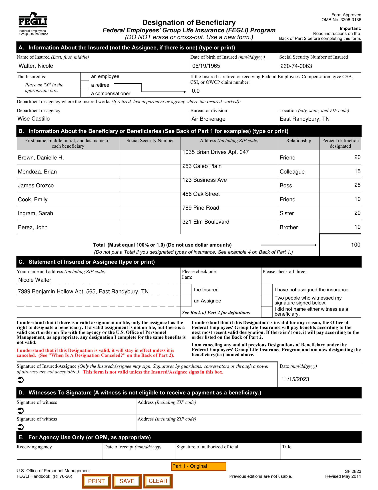

Click through the tabs to see what models receive as input and what they must produce as output.
{
"$defs": {
"Beneficiary": {
"type": "object",
"properties": {
"name": { "type": "string", "description": "Name of the beneficiary" },
"relationship": { "type": "string", "description": "Relationship to the insured" },
"percentage": { "type": "integer", "description": "Percentage of benefits" },
"address": { "type": "string", "description": "Address of the beneficiary" }
}
},
"InsuredAssignee": {
"type": "object",
"properties": {
"name": { "type": "string" },
"address": { "type": "string" },
"date": { "type": "string" }
}
}
},
"properties": {
"insured_name": { "type": "string" },
"insured_date_of_birth": { "type": "string" },
"insured_ssn": { "type": "string" },
"insured_claim_number": { "type": "number" },
"insured_department": { "type": "string" },
"insured_bureau": { "type": "string" },
"insured_location": { "type": "string" },
"total_percentage": { "type": "integer" },
"beneficiaries": { "type": "array", "items": { "$ref": "#/$defs/Beneficiary" } },
"insured_assignee": { "$ref": "#/$defs/InsuredAssignee" }
}
}
{
"insured_name": "Walter, Nicole",
"insured_date_of_birth": "06/19/1965",
"insured_ssn": "230-74-0063",
"insured_claim_number": 0.0,
"insured_department": "Wise-Castillo",
"insured_bureau": "Air Brokerage",
"insured_location": "East Randybury, TN",
"total_percentage": 100,
"beneficiaries": [
{ "name": "Brown, Danielle H.", "relationship": "Friend", "percentage": 20, "address": "1035 Brian Drives Apt. 047" },
{ "name": "Mendoza, Brian", "relationship": "Colleague", "percentage": 15, "address": "253 Caleb Plain" },
{ "name": "James Orozco", "relationship": "Boss", "percentage": 25, "address": "123 Business Ave" },
{ "name": "Cook, Emily", "relationship": "Friend", "percentage": 10, "address": "456 Oak Street" },
{ "name": "Ingram, Sarah", "relationship": "Sister", "percentage": 20, "address": "789 Pine Road" },
{ "name": "Perez, John", "relationship": "Brother", "percentage": 10, "address": "321 Elm Boulevard" }
],
"insured_assignee": {
"name": "Nicole Walter",
"address": "7389 Benjamin Hollow Apt. 565, East Randybury, TN",
"date": "11/15/2023"
}
}
Form Approved Designation of Beneficiary OMB No. 3206-0136 Federal Employees Federal Employees' Group Life Insurance (FEGLI) Program Important: Group Life Insurance Read instructions on the (DO NOT erase or cross-out. Use a new form.) Back of Part 2 before completing this form. Name of Insured (Last, first, middle) A. Information About the Insured (not the Assignee, if there is one) (type or print) Date of birth of Insured (mm/dd/yyyy) Social Security Number of Insured The Insured is: Place an "X" in the appropriate box. an employee a retiree a compensationer If the Insured is retired or receiving Federal Employees' Compensation, give CSA, CSI, or OWCP claim number: Department or agency where the Insured works (If retired, last department or agency where the Insured worked): Department or agency Bureau or division Location (city, state, and ZIP code) First name, middle initial, and last name of each beneficiary Social Security Number Address (Including ZIP code) Percent or fraction designated Relationship B. Information About the Beneficiary or Beneficiaries (See Back of Part 1 for examples) (type or print) Total (Must equal 100% or 1.0) (Do not use dollar amounts) (Do not put a Total if you designated types of insurance. See example 4 on Back of Part 1.) C. Statement of Insured or Assignee (type or print) Your name and address (Including ZIP code) Please check one: Please check all three: I am: the Insured I have not assigned the insurance. an Assignee Two people who witnessed my signature signed below. See Back of Part 2 for definitions I did not name either witness as a beneficiary. I understand that if there is a valid assignment on file, only the assignee has the right to designate a beneficiary. If a valid assignment is not on file, but there is a valid court order on file with the agency or the U.S. Office of Personnel Management, as appropriate, any designation I complete for the same benefits is not valid. I understand that if this Designation is valid, it will stay in effect unless it is canceled. (See "When Is A Designation Canceled?" on the Back of Part 2). I understand that if this Designation is invalid for any reason, the Office of Federal Employees' Group Life Insurance will pay benefits according to the next most recent valid designation. If there isn't one, it will pay according to the order listed on the Back of Part 2. I am canceling any and all previous Designations of Beneficiary under the Federal Employees' Group Life Insurance Program and am now designating the beneficiary(ies) named above. Date (mm/dd/yyyy) Signature of Insured/Assignee (Only the Insured/Assignee may sign. Signatures by guardians, conservators or through a power of attorney are not acceptable.) D. Witnesses To Signature (A witness is not eligible to receive a payment as a beneficiary.) E. For Agency Use Only (or OPM, as appropriate) Signature of witness Signature of witness Address (Including ZIP code) Address (Including ZIP code) Receiving agency Date of receipt (mm/dd/yyyy) Signature of authorized official Title This form is not valid unless the Insured/Assignee signs in this box. U.S. Office of Personnel Management SF 2823 FEGLI Handbook (RI 76-26) Previous editions are not usable. Revised May 2014 Walter, Nicole 06/19/1965 230-74-0063 0.0 Wise-Castillo Air Brokerage East Randybury, TN Brown, Danielle H. 1035 Brian Drives Apt. 047 Friend 20 253 Caleb Plain 25 123 Business Ave 456 Oak Street 20 789 Pine Road 321 Elm Boulevard Brother Ingram, Sarah Friend James Orozco Colleague 15 10 10 Perez, John Sister Cook, Emily Boss Mendoza, Brian Nicole Walter 7389 Benjamin Hollow Apt. 565, East Randybury, TN 11/15/2023 100
Form Approved
Designation of Beneficiary OMB No. 3206-0136
Federal Employees Federal Employees' Group Life Insurance (FEGLI) Program Read instructions Important: on the
Group Life Insurance (DO NOT erase or cross-out. Use a new form.) Back of Part 2 before completing this form.
A. Information About the Insured (not the Assignee, if there is one) (type or print)
Name of Insured (Last, first, middle) Date of birth of Insured (mm/dd/yyyy) Social Security Number of Insured
Walter, Nicole 06/19/1965 230-74-0063
The Insured is: an employee If the Insured is retired or receiving Federal Employees' Compensation, give CSA,
CSI, or OWCP claim number:
Place an "X" in the a retiree
appropriate box. 0.0
a compensationer
Department or agency where the Insured works (If retired, last department or agency where the Insured worked):
Department or agency Bureau or division Location (city, state, and ZIP code)
Wise-Castillo Air Brokerage East Randybury, TN
B. Information About the Beneficiary or Beneficiaries (See Back of Part 1 for examples) (type or print)
First name, middle initial, and last name of Social Security Number Address (Including ZIP code) Relationship Percent or fraction
each beneficiary designated
1035 Brian Drives Apt. 047
Brown, Danielle H. Friend 20
253 Caleb Plain
Mendoza, Brian Colleague 15
123 Business Ave
James Orozco Boss 25
456 Oak Street
Cook, Emily Friend 10
789 Pine Road
Ingram, Sarah Sister 20
321 Elm Boulevard
Perez, John Brother 10
Total (Must equal 100% or 1.0) (Do not use dollar amounts) 100
(Do not put a Total if you designated types of insurance. See example 4 on Back of Part 1.)
C. Statement of Insured or Assignee (type or print)
Your name and address (Including ZIP code) Please check one: Please check all three:
Nicole Walter I am:
7389 Benjamin Hollow Apt. 565, East Randybury, TN the Insured I have not assigned the insurance.
Two people who witnessed my
an Assignee signature signed below.
I did not name either witness as a
See Back of Part 2 for definitions beneficiary.
I understand that if there is a valid assignment on file, only the assignee has the I understand that if this Designation is invalid for any reason, the Office of
right to designate a beneficiary. If a valid assignment is not on file, but there is a Federal Employees' Group Life Insurance will pay benefits according to the
valid court order on file with the agency or the U.S. Office of Personnel next most recent valid designation. If there isn't one, it will pay according to the
Management, as appropriate, any designation I complete for the same benefits is order listed on the Back of Part 2.
not valid.
I am canceling any and all previous Designations of Beneficiary under the
I understand that if this Designation is valid, it will stay in effect unless it is Federal Employees' Group Life Insurance Program and am now designating the
canceled. (See "When Is A Designation Canceled?" on the Back of Part 2). beneficiary(ies) named above.
Signature of Insured/Assignee Date (mm/dd/yyyy)
of attorney are not acceptable.) This form is not valid unless the Insured/Assignee signs in this box.
11/15/2023
D. Witnesses To Signature (A witness is not eligible to receive a payment as a beneficiary.)
Signature of witness Address (Including ZIP code)
Signature of witness Address (Including ZIP code)
E. For Agency Use Only (or OPM, as appropriate)
Receiving agency Date of receipt (mm/dd/yyyy) Signature of authorized official Title
Part 1 - Original
U.S. Office of Personnel Management SF 2823
FEGLI Handbook (RI 76-26) Previous editions are not usable. Revised May 2014
PRINT SAVE CLEAR

| # | Model | Size | EM % | ANLS | Flat | Nested | Table | Perfect |
|---|
Documents from the benchmark. Click to see model scores.
@inproceedings{varex2026,
title = {VAREX: A Benchmark for Multi-Modal
Structured Extraction from Documents},
author = {Anonymous},
year = {2026}
}